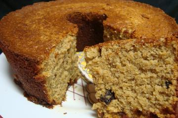

Home
Bolo de Banana Fit

-Zero Glúten
-Zero Açúcar
Descrição
Bolo de banana fácil, sem farinha de trigo e sem adição de açúcar
Ingredientes
- 2 xícaras de farinha de aveia
- 4 bananas
- 4 ovos
- 1/3 xícara de óleo
- 1 xícara de uva passa
- 1 1/2 colher de sopa de fermento
- Opcional: Nozes, Damasco, Macadâmia ou outro topping de sua preferência
Modo de preparo
- Bata no liquidificador as bananas, ovos, óleo e uvas passas
- Colocar a mistura em uma tigela com a farinha de aveia e bater até ficar homogêneo
- Adicionar o fermento e o topping
- Colocar em uma forma untada e levar ao forno por 25 a 30 minutos